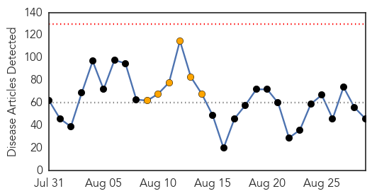
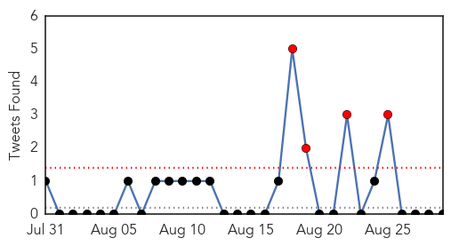
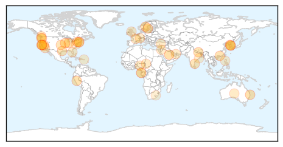
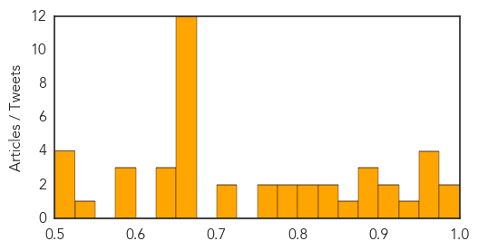

Toggle navigation
Early Warning
Daily Alerts
Unknown
Aug 29, 2015
Compare to:
-
Dengue Fever
Hemmorhagic Fever
Mold/Fungal Infection
Influenza
Meningitis
Pertussis / Whooping Cough
Middle East Respiratory Syndrome
Cholera
Hepatitis
Chikungunya
Yellow Fever
Bubonic Plague
West Nile Virus
Swine Flu
Ebola
Measles
Mumps
30 Day Trends
Web: 0
alerts
, 6
warnings
Twitter: 4
alerts
, 0
warnings
Top Articles:
0.990
San Quentin water shut off in Legionnaires' disease scare
0.989
Deaths from MERS virus surge in Saudi Arabia
0.973
Illinois: Two Are Dead in Outbreak of Legionnaires’ Disease
0.960
Number of foreign visitors returns to level before MERS
0.952
Indiana HIV outbreak tops 180
0.952
Number of foreign visitors returns to level before MERS
0.947
Confirmed Legionnaires’ Disease Cases at Vets Home Now at 23 « CBS St. Louis
0.917
Chicago Tribune
0.917
Chicago Tribune
0.895
EU says Europe can expect imported MERS cases
0.890
EU health agency says Europe can expect imported MERS cases - Xinhua
0.883
Cases of eye ailment SHAPU reported
0.869
barfblog
0.850
THE RETURN OF THE BLACK DEATH
0.847
KiiiTV.com South Texas, Corpus Christi, Coastal Bend
0.809
Tuberculosis: Evolving Epidemic
0.808
Nine Cases of Cutaneous Anthrax Disease Diagnosed In Imilchil
0.799
Health officials look for person who came in contact with rabid bat in Stanley Park - BC
0.783
Marler Clark Files Multiple Lawsuits in Kapowsin Salmonella Outbreak
0.763
Legionnaires' disease sends California prisoner to hospital
0.754
West Chester University says buildings safe from legionella bacteria
0.721
Legionnaires’ disease sends California inmate to hospital
0.717
Antibiotic Resistant Salmonella in Kapowsin Pork Sickens 152
0.664
More ticks carrying babesiosis parasite, raising risk of serious illness
0.662
Life on Mars: NASA launches year-long isolation experiment
0.662
Turkish jets join US-led coalition strikes on Islamic State group
0.662
Ministers urge review of Schengen rules to boost rail security
0.662
Egypt sentences Al-Jazeera English journalists to three years in prison
0.662
Chad executes 10 Boko Haram members by firing squad
0.662
Boko Haram fighters sentenced to death over bombing in Chad's capital
0.662
US teen sentenced to 11 years for IS group support
0.662
Ugandan entrepreneur uses briquettes to tackle gender and development issues
0.662
Green Africa: Solar lamps to empower the poor
0.661
Health board places A&E on 'High Risk' as staffing levels hit crisis point
0.660
Management Takes Steps To Prevent Prison Outbreak
0.647
Industry
0.640
The liability of medical laboratories before the UAE courts: a case study
0.627
KBS World Radio
0.595
HPV and Latino Health
0.592
Jordan reports two new corona virus casesHealthcare
0.578
Philstar Mobile
0.548
Odisha Government Ropes in Doctors from SCB Hospital to Care for Patients in Sishu Bhawan
0.519
Bite Back: Campaign to get fluoride in Australian towns, with push to give power to state governments to decide instead of councils
0.518
King, PM revitalise health sector
0.513
After 152 with Salmonella Kapowsin Meats Suspends Operation
0.510
Bite Back: Campaign to get fluoride in Australian towns, with push to give power to state governments to decide instead of councils
Top Tweets:
No tweets found for Aug 29, 2015
Web/News Articles

Tweets

Article Locations

Article Confidences
